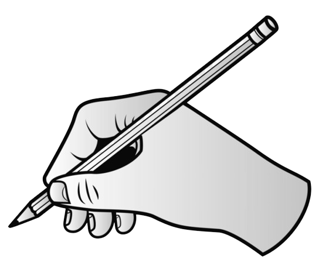

On the next pages, you'll find prompts designed to enrich the image in your head and deepen your understanding of this upsetting experience.
We ask you to use the prompts and write a sentence or two reflecting on your personal experience.
Instructions 2/3
Importantly, you will only see the word you are currently writing. Once you continue to the next word, the previous word will disappear.
This is meant to make your experience as close as possible to the experience of thinking out loud.
To make sure you share a complete thought with us, there will be a minimum number of words before the button turns green.
Instructions 3/3
PRACTICE
 Please type the following paragraph word by word:
We ask you to reflect on your personal experience using the prompts.
For each prompt, write a sentence or two about what's on your mind right now, as if you were thinking out loud.
Use the prompt and write a sentence or two reflecting on your personal experience.